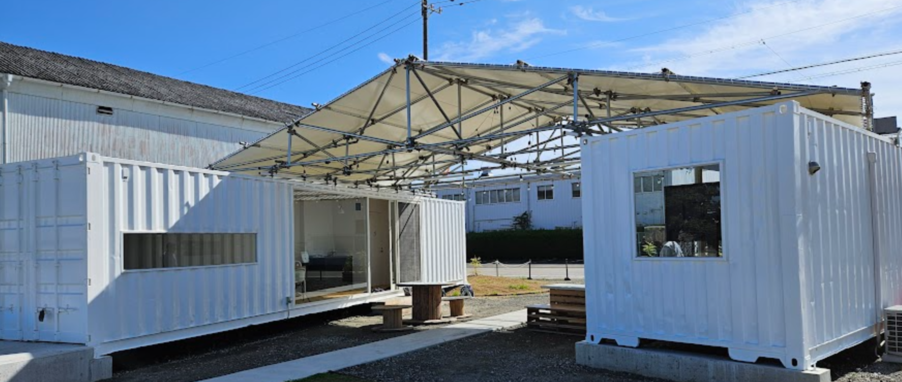

第13回市民共創知研究会「みらいらぼ なごや 2024」
名古屋市 中川運河沿いに新しくオープンしたPALET.NUを会場に、共創による新しい未来を探る研究会を開催します。
テーマ：「産業と地域の未来を紡ぐ共創のかたちおよび一般」
名古屋市中川運河エリアは、地域資源と産業の融合を象徴するエリアです。本研究会では、PALET.NUを舞台に、共創の考え方を通じて地域社会や産業における新たな未来像を模索します。また、共創的な知やAI、シビックテックなど、幅広い研究や活動報告を募集します。具体的には以下のようなテーマを歓迎します。
- 多様なステークホルダーの連携による地域課題解決の方法
- 市民参加型プロジェクトにおける共創の実践と課題
- コミュニティづくりを支える共創の新しい形
- デジタル技術やAIを活用した共創的な活動の事例
- 地域資源の活用を通じた社会変革の可能性
- 共創的な知の理論や実践事例
- AIやデータ活用による社会課題解決やシビックテックの取り組み
人工知能学会 市民共創知研究会 第13回研究会
「みらいらぼ なごや 2024」
- 会期：
- 2024年12月19日(木)
- 発表申込：
- 発表申込フォーム
- 発表申込締切：
- 2024年12月
6日(金)9日(月)（延期しました。ただし想定発表件数が集まり次第、締め切る場合があります）
- 原稿提出締切：
- 2024年12月
13日(金)16日(月)（延期しました）
- 参加申込：
- 参加申込フォーム
- 参加申込締切：
- 2024年12月
13日(金)16日(月)（延期しました）
- 会場：
- PALET.NU（PALET.NUは、アートとモノづくりを通じた地域活性化を目的とした施設です。中川運河エリアに位置し、地域資源を活用しながら新しい共創の場を生み出しています。）
Zoom会場
- 募集内容：
- 地域社会や産業、技術革新、共創的な知の理論や実践に関わる事例や活動報告を広く募集します。
- 主催：
- 人工知能学会 市民共創知研究会
- 連絡先：
- 協力：
- 一般社団法人フォーセット名古屋
- 研究会参加費：
- 無料
- 予稿集：
- 後日掲載
- プログラム：
-
- 10:00-10:10 趣旨説明
- 10:10-11:50 発表・対話セッション
- 11:50-11:55 名古屋市のフィールド活用型支援事業「HatchMeets」のご紹介
- 11:55-12:00 午後のワークショップ説明
- 12:00-13:00 昼食（お弁当）
- 13:00-15:00 ワークショップ
- 13:00-13:55 第1部：助け合いマッチング助手とその活用
- システムの使い方説明
- 体験と感想の共有
- 振り返りアンケート
- 13:55-14:30 第2部：共創妄想ファシリテーターを用いた中川運河周辺の協働・共創ディスカッション
- システムの使い方説明
- グループディスカッション
- 振り返りアンケート
- 14:30-15:00 総括討論とクロージング